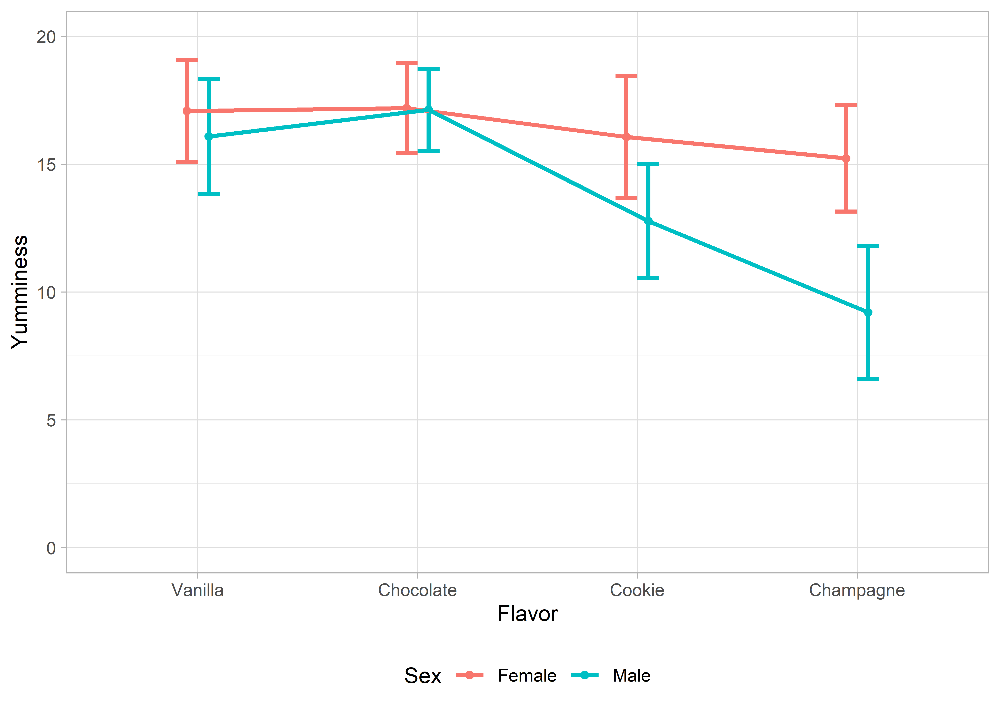

Faktorielle ANOVA

Mit einer (allgemeinen) faktoriellen ANOVA kann man mehr als zwei Gruppenmittelwerte in Abhängigkeit von kategorialen Prädiktoren vergleichen. Da die ANOVA ein Omnibus-Test ist, und so nur anzeigt, ob irgendwo ein signifikanter Unterschied zwischen den betrachteten Mittelwerten besteht, nutzt man entweder Kontraste oder Post-hoc-Tests, um herauszufinden, welche Mittelwerte sich letztendlich signifikant voneinander unterscheiden. Zusätzlich kann eine Simple Effects Analysis dazu genutzt werden, Unterschiede auf einzelnen Faktorstufen festzustellen.
Pakete
Alle Berechnungen und Abbildungen können wir mit unseren Standardpaketen durchführen. Wir benötigen das tidyverse zum Data Wrangling und zur Visualisierung der Daten. haven benötigen wir für den Import von SPSS-Dateien und rstatix für statistische Analysen.
library(tidyverse)
library(haven)
library(rstatix)Beispiel
Jeder liebt es, so viel ist klar. Aber mögen alle Personen jede Sorte Eis gleich gerne? Pfiffige Forscher haben sich an einem schönen Sommertag an einer Eisdile in der Dortmunder Innenstadt platziert und viele zufällig vorbeikommende Passanten vier Eissorten kosten lassen. Die Probanden konnten dann auf einer Skala von 0 – 20 angeben, wie lecker sie die eben probierte Eissorte fanden. Ein höherer Wert bedeutet eine bessere Bewertung. Wir wollen herausfinden, ob die Sorte selbst und das Geschlecht des Verkosters einen Einfluss auf den Geschmack hat. Wichtig ist dabei zu bachten, dass jeder Passant nur eine Eissorte probiert hat.
Klassisch
Die Daten zu diesem Experiment sind in der Datei ice_cream.sav. In der ersten Spalte (flavor) ist der Geschmack eingetragen, in der zweiten Spalte (sex) das Geschlecht des Verkosters. In der dritten Spalte finden wir unsere abhängige Variable yumminess. Wir berechnen hier also eine 4 \(\times\) 2 faktorielle ANOVA mit den Zwischensubjektfaktoren “Eissorte” mit vier Fakorstufen (“Vanilla”, “Chocolate”, “Cookie” und “Champagne”) und “Geschlecht” mit zwei Faktorstufen (“Female” und “Male”).
ice_cream <- read_spss("data/ice_cream.sav")
ice_cream <- ice_cream %>% mutate_if(is.labelled, as_factor)
ice_cream## # A tibble: 295 x 4
## id flavor sex yumminess
## <chr> <fct> <fct> <dbl>
## 1 1 Champagne Female 14
## 2 2 Vanilla Female 19
## 3 3 Champagne Female 16
## 4 4 Chocolate Female 17
## 5 5 Chocolate Female 16
## 6 6 Vanilla Male 16
## 7 7 Vanilla Female 17
## 8 8 Vanilla Male 18
## 9 9 Cookie Male 13
## 10 10 Champagne Female 13
## # ... with 285 more rowsVoraussetzungen
Da wir uns im GLM bewegen, gelten die üblichen Voraussetzungen.
EDA
# Deskriptive Statistiken zur Eissorte...
ice_cream %>%
group_by(flavor) %>%
get_summary_stats()## # A tibble: 4 x 14
## flavor variable n min max median q1 q3 iqr mad mean sd
## <fct> <chr> <dbl> <dbl> <dbl> <dbl> <dbl> <dbl> <dbl> <dbl> <dbl> <dbl>
## 1 Vanil~ yummine~ 74 11 20 17 15 18 3 2.96 16.6 2.18
## 2 Choco~ yummine~ 81 12 20 17 16 18 2 1.48 17.2 1.68
## 3 Cookie yummine~ 80 8 20 14.5 12.8 17 4.25 3.71 14.6 2.83
## 4 Champ~ yummine~ 60 2 20 14 11 15 4 2.96 13.2 3.64
## # ... with 2 more variables: se <dbl>, ci <dbl># ...zur Verteilung der Geschlechter...
ice_cream %>%
group_by(sex) %>%
get_summary_stats()## # A tibble: 2 x 14
## sex variable n min max median q1 q3 iqr mad mean sd
## <fct> <chr> <dbl> <dbl> <dbl> <dbl> <dbl> <dbl> <dbl> <dbl> <dbl> <dbl>
## 1 Fema~ yummine~ 162 10 20 17 15 18 3 2.96 16.4 2.21
## 2 Male yummine~ 133 2 20 15 12 17 5 4.45 14.5 3.51
## # ... with 2 more variables: se <dbl>, ci <dbl># ...und zu den Eissorten für jedes Geschlecht
ice_cream %>%
group_by(flavor, sex) %>%
get_summary_stats()## # A tibble: 8 x 15
## flavor sex variable n min max median q1 q3 iqr mad mean
## <fct> <fct> <chr> <dbl> <dbl> <dbl> <dbl> <dbl> <dbl> <dbl> <dbl> <dbl>
## 1 Vanil~ Fema~ yummine~ 36 12 20 17 16 19 3 2.22 17.1
## 2 Vanil~ Male yummine~ 38 11 20 16 15 18 3 2.22 16.1
## 3 Choco~ Fema~ yummine~ 41 13 20 17 16 18 2 1.48 17.2
## 4 Choco~ Male yummine~ 40 12 20 17 16 18 2 1.48 17.1
## 5 Cookie Fema~ yummine~ 45 10 20 16 14 18 4 2.96 16.1
## 6 Cookie Male yummine~ 35 8 18 13 11.5 14 2.5 1.48 12.8
## 7 Champ~ Fema~ yummine~ 40 11 20 15 14 17 3 1.48 15.2
## 8 Champ~ Male yummine~ 20 2 13 10 8.75 11 2.25 1.48 9.2
## # ... with 3 more variables: sd <dbl>, se <dbl>, ci <dbl>Wir haben Daten zu vier Eissorten. Verköstigt wurden am häufigsten Schokolade (\(n = 81\)) und Cookie (\(n = 80\)); bewertet wurden am besten Vanille (\(M = 16.57, SD = 2.18\)) und Schokolade (\(M = 17.16, SD = 1.68\)). Insgesamt haben \(N = 295\) Passanten an der Untersuchung teilgenommen, wovon \(n = 162\) Frauen und \(n = 133\) Männer waren.

Aufgrund der Abbildung bekommen wir eine grobe Idee davon, dass die untersuchten Frauen alle Eissorten in etwa gleich lecker fanden. Die Männer jedoch stehen weniger auf Cookie und überhaupt nicht auf Champagner. Bah! Jetzt ist die Frage, ob unsere Einschätzung, dass sich die Mittelwerte tatsächlich unterscheiden signifikant sind.
Durchführung
ice_cream %>%
anova_test(yumminess ~ flavor*sex)## Coefficient covariances computed by hccm()## ANOVA Table (type II tests)
##
## Effect DFn DFd F p p<.05 ges
## 1 flavor 3 287 60.633 2.16e-30 * 0.388
## 2 sex 1 287 86.118 4.29e-18 * 0.231
## 3 flavor:sex 3 287 25.377 1.37e-14 * 0.210